Upcoming Events
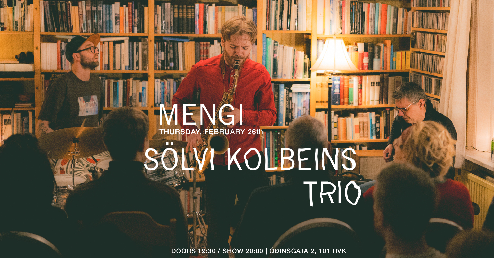THU 26.02 Sölvi Kolbeins Trio
Tickets Thursday, February 26th SÖLVI KOLBEINS TRIO doors 19:30 / show 20:00 2500kr / 2000kr students / pay what u can Tríó saxófónleikarans Sölva Kolbeinssonar leikur efni af plötunni Collage sem kom út hjá Reykjavík Record Shop í nóvember 2025. Collage er fyrsta hljómplata Sölva eingöngu með eigin tónsmíðum. Þetta er tilraunakenndur djass, innblásinn af dvöl hans í Berlín og Kaupmannahöfn ásamt því að flytja aftur heim til Íslands. Lögin eru ólík og tákna mismunandi augnablik, myndir, hver og ein með eigin stemningu og sterk karaktereinkenni. Saman skapa myndirnar heild og þaðan kemur titill plötunnar. Ásamt Sölva koma fram gítarleikarinn Hilmar Jensson og slagverksleikarinn Magnús Trygvason Eliassen. Tríóið varð til út frá dúói Sölva og Magnúsar en þeir voru paraðir saman við Hilmar á Djasshátíð 2020 og spiluðu þar stórskemmtilega tónleika. Til að byrja með spiluðu þeir sín uppáhalds lög eftir aðra en fókusinn færðist fljótlega yfir á tónsmíðar Sölva. Eftir að spila fleiri tónleika og prófa allskonar héldu þeir íí hljóðver desember 2024. Nú er komin plata og meira á leiðinni! Sölvi Kolbeinsson (f. 1996) er saxófónleikari og tónskáld. Hann stundaði klassískt saxófónnám í Tónmenntaskóla Reykjavíkur og Tónlistarskólanum í Reykjavík en rytmískt nám í Tónlistarskóla FÍH og Jazz-Institut Berlin þaðan sem hann lauk BA námi sumarið 2019. Hann er meðlimur í mörgum ólíkum hópum á Íslandi og víðar. Þar má nefna dúó með trommaranum Magnúsi Trygvasyni Eliassen, Mánudjass, Camus quartet, Ari Árelíus, La bomba, Guiding star orchestra, Hamamelidae, Volcano bjorn og Windisch quartet. Sölvi hefur spilað á djasshátíðum í Kanada, Þýskalandi, Finnlandi, Noregi, Danmörku og á Íslandi auk þess að hafa komið fram í fjölda annarra landa. Sölvi hefur gefið út þrjár plötur eingöngu með eigin tónsmíðum: Collage (2025), Live in Berlin (2022) og August (2021). Hann hlaut Íslensku tónlistarverðlaunin árið 2016 sem bjartasta vonin í flokknum Djass- og blústónlist. Sölvi kennir á saxófón og klarinett í Skólahljómsveit Grafarvogs og Tónskóla Sigursveins síðan haustið 2023. ------- Icelandic saxophonist Sölvi Kolbeinsson plays material from his album Collage, released by Reykjavík Record Shop in November 2025. Collage is Sölvi's first album solely with his own compositions. It is experimental jazz, inspired by his stay in Berlin and Copenhagen as well as moving back home to Iceland. The songs are variable and represent different moments, images, each with its own atmosphere and strong character traits. Together, the images create a whole and that leads us to the album title. Along with Sölvi are guitarist Hilmar Jensson and percussionist Magnús Trygvason Eliassen. The trio is an extension of Sölvi ́s and Magnús ́s duo. They were paired with Hilmar at the 2020 Reykjavík Jazz Festival and played a great concert there. At first, they played their favourite songs by others, but the focus soon shifted to Sölvi's compositions. After playing more concerts and rehearsing, they went into the studio in December 2024. Now there is an album out and more on the way! Sölvi Kolbeinsson (b. 1996) is a Icelandic saxophonist and composer. He studied classical saxophone at the Reykjavík School of Music and rhythmic studies at the FÍH School of Music and the Jazz-Institut Berlin, from where he graduated with a BA in the summer of 2019. He is a member of many different groups in Iceland and beyond. These include a duo with drummer Magnús Trygvason Eliassen, Mánudjass, Camus quartet, Ari Árelíus, La bomba, Guiding star orchestra, Hamamelidae, Volcano bjorn and Windisch quartet. Sölvi has played at jazz festivals in Canada, Germany, Finland, Norway, Denmark and Iceland, as well as having performed in many other countries. Sölvi has released three albums of his own compositions: Collage (2025), Live in Berlin (2022) and August (2021). He received the Icelandic Music Award in 2016 as the brightest hope in the Jazz and Blues category. Sölvi has been teaching saxophone and clarinet at the Grafarvogur School Orchestra and Sigursveinn Music School since 2023.

FRI 27.02 Ásta Fanney
Tickets Friday, February 27th ÁSTA FANNEY doors 19:30 / show 20:00 2500kr / 2000kr students / pay what u can MORE INFO TBA Ásta Fanney Sigurðardóttir (1987), deals with art, poetry, filmmaking and music. She has exhibited and performed her work in museums and festivals around the world, including Reykjavík Art Gallery, Ars Longa, Onassis and MOT and was nominated for the Bernard-Heidsieck-Centre Pompidou prize in France in 2021. Ásta Fanney will represent Iceland at the Venice Art Biennale in 2026.
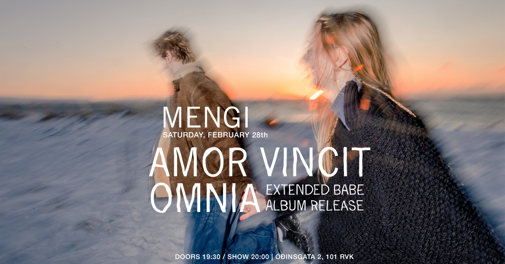SAT 28.02 Amor Vincit Omnia: Extended Babe Album Release
Tickets Saturday, February 28th AMOR VINCIT OMNIA: EXTENDED BABE ALBUM RELEASE doors 19:30 / show 20:00 2500kr / 2000kr students / pay what u can Amor Vincit Omnia invites all to their release concerts where the new EP extended babe will be premiered along with various instrumentalists. The EP has been in the making for a long time and we are super excited to share it with you in all its glory. Amor Vincit Omnia býður til útgáfutónleika þar sem nýja stuttskífa þeirra extended babe verður frumflutt ásamt hinum og þessum hljóðfæraleikurum. Platan hefur verið í vinnslu í þó nokkurn tíma og erum við spennt að deila henni með ykkur í heild sinni. ------ Amor Vincit Omnia is a pop-project born in 2023. Amor’s music is best described as playful and eccentric. They are inspired by people who push the boundaries of pop music, and their sounds are inspired by everything between Skrillex and Steve Reich. In 2024, Amor released their debut EP, brb babe, earning them Reykjavik Grapevine’s ‘One to Watch’ and the Kraumur Awards. In February they are releasing their second EP, extended babe, a heartfelt collection of songs made for the sole purpose of making people feel worse about their love life. Amor Vincit Omnia er popp hljómsveit skipuð af þeim Erlu Hlín og Baldri. Tónlistinni þeirra má lýsa sem leikandi og spennandi og dregur innblástur frá framsæknu tónlistarfólki, allt á milli Skrillex og Steve Reich. Fyrsta stuttskífa Amor kom út 2024 og fyrir hana fengu þau kraumsverðlaun og unnu í þokkabót titilinn ‘One to Watch’ hjá Reykjavik Grapevine. Í febrúar ætla þau að gefa út splunkunýja stuttskífu, extended babe, en það er samansafn af lögum sem gerð eru til að láta fólki líða verr og drukkna í harmi ástarinnar.
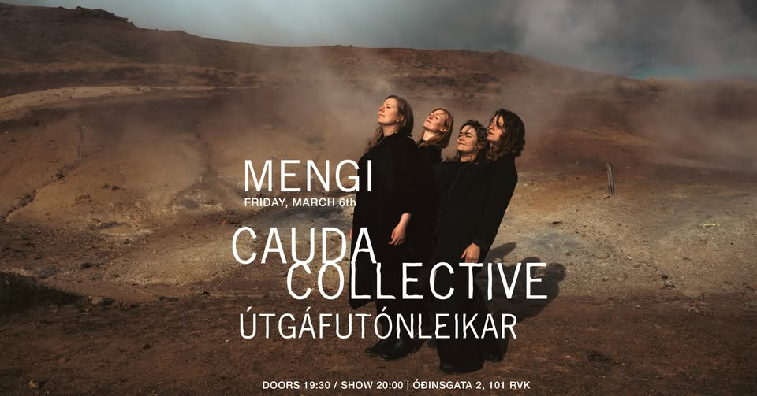FRI 06.03 Cauda Collective // Solastalgia
Tickets Friday, March 6th CAUDA COLLECTIVE: ÚTGAFUTÓNLEIKAR doors 19:30 / show 20:00 2500kr / 2000kr students / pay what u can Föstudaginn 6. mars kl. 20 fagnar kammerhópurinn Cauda Collective útgáfu nýrrar hljómplötu með útgáfutónleikum í Mengi. Platan, sem er önnur breiðskífa Caudu Collective, inniheldur fjögur tónverk sem samin voru fyrir hópinn á árunum 2023-2025; þ.e. strengjatríóið Þrenning: solastalgia eftir Svein Lúðvík Björnsson, Ég fann rödd - vókalísa eftir Sigrúnu Jónsdóttur og Sjö hvísl sálarinnar eftir Hauk Gröndal fyrir sópran og strengjatríó; og Kona lítur við eftir Eygló Höskuldsdóttur Viborg við texta Brynju Hjálmsdóttur fyrir sópran og selló. Platan heitir Solastalgia eftir einu verki plötunnar, þ.e. strengjatríóinu Þrenning með undirtilinn Solastalgia. Orðið solatalgia er nýyrði myndað af samsetningu latneska orðsins sōlācium sem merkir þægindi, og grísku rótarinnar algia sem merkir sársauki, þjáning, eða sorg. Orðið Solastalgia lýsir því tilfinningalegri eða tilvistarlegri vanlíðan af völdum umhverfisbreytinga. Flytjendur eru Björk Níelsdóttir sópran, Sigrún Harðardóttir á fiðlu, Þóra Margrét Sveinsdóttir á víólu og Þórdís Gerður Jónsdóttir á selló. Tónmeistari er Þorgrímur Þorsteinsson.
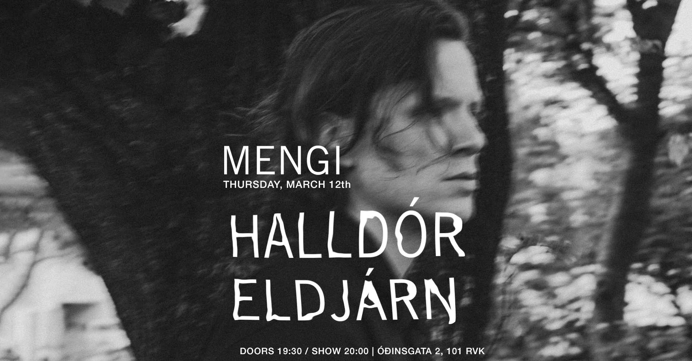THU 12.03 Halldór Eldjárn
Tickets Thursday, March 12th HALLDÓR ELDJÁRN doors 19:30 / show 20:00 2500kr / 2000kr students / pay what u can Halldór’s night of music experiments – New music and a few risk-free stunts. Halldór is a composer and an inventor in every aspect of the word. At this Mengi concert Halldór will open up his prototype drawer showcasing new music instruments, strange speakers but first and foremost – brand new music that waits to be completed and released. Tilraunatónleikar Halldórs – Ný tónlist og nokkur áhættulítil áhættuatriði. Halldór er tónskáld og tilraunamaður á alla enda og kanta. Á þessum tónleikum ætlar hann að skyggnast í frumgerðaskúffuna og veiða eitt og annað upp úr henni. Ný hljóðfæri, skrýtna hátalara en fyrst og fremst – splunkunýja tónlist sem bíður eftir því að vera fullmótuð og gefin út.
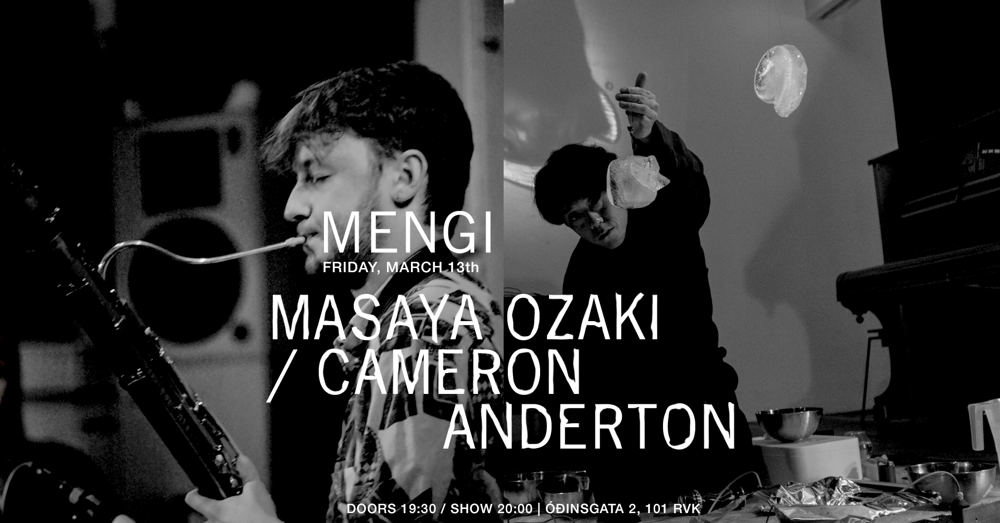FRI 13.03 Masaya Ozaki / Cameron Anderton
Tickets Friday, March 13th MASAYA OZAKI / CAMERON ANDERTON doors 19:30 / show 20:00 2500kr / 2000kr students / pay what u can Masaya Ozaki, Guðmundur Steinn Gunnarsson, and Simon Valentin Hirt will perform Masaya’s new composition Stillness, Melting, Sounding for guitar trio. This slow, transformative, quiet, meditative, long-duration piece will be guided by three melting ice cubes. Cameron Anderton presents 'Nuair bha mi òg' (‘When I was young’), a new semi-improvised work for solo bassoon and electronics. The performance will explore Scottish bagpipe culture, from the spectral qualities of the pipes themselves to traditional repertoire. As an extension of his artistic research and practice, Cameron blends experimental techniques with direct use of traditional material to reflect on ideas of cultural memory, loss and regeneration. BIOS: Masaya Ozaki is a composer /performer born in Niigata, Japan. His work is deeply influenced by the transient nature of space and the subtleties of sound within physical environments. Ozaki views sound not just as a medium, but as a form deeply intertwined with the spaces it inhabits. Cameron is an emerging Scottish composer and performer based in Reykjavik. Focusing on instrumental composition and improvisation, his artistic practice is grounded in the traditional cultural practices of Scotland, shaped by the collective trauma of a people long disconnected from their roots.
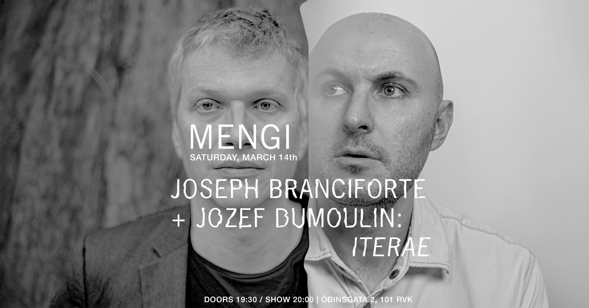SAT 14.03 Joseph Branciforte + Jozef Dumoulin: Iterae
Tickets Saturday, March 14th JOSEPH BRANCIFORTE + JOZEF DUMOULIN: ITERAE doors 19:30 / show 20:00 3000kr / 2500kr students / pay what u can ITERAE brings together New York electronic musician Joseph Branciforte and Belgian keyboardist Jozef Dumoulin, two artists who have reimagined the sonic language of the Fender Rhodes piano and the potential of technology to shape musical improvisation. Dumoulin is a Belgian keyboardist recognized for his role in redefining the Fender Rhodes as a 21st-century instrument, forging a highly personal musical language through extensive electronic manipulation. Branciforte is a composer, producer, and fellow Rhodes experimentalist known for bridging acoustic and electronic worlds in collaborations with Theo Bleckmann, Taylor Deupree, and Ryuichi Sakamoto. Their performances center around two separate Rhodes pianos, each artist applying his own array of processing and effects. In addition to sound generation, Branciforte harnesses a custom live editing system—designed to process both musicians' outputs in real time. This software allows him to capture and reconfigure musical material on the fly, creating cascading, lattice-like structures from small details within the unfolding improvisation. The result is a sound that merges aspects of the early glitch movement with bold explorations of harmony and form—weaving together threads from modern classical, electroacoustic, and ambient to create something decisively of the present. Their debut album ITERAE is due out on Greyfade in April 2026. ---- Joseph Branciforte (b. 1985) is a musician, composer, designer, and sound artist whose work explores the intersection of structured systems and emergent phenomena through custom-built technology. He works fluidly across performance, composition, and installation in both acoustic and electronic mediums. His recorded works include collaborations with vocalist Theo Bleckmann—LP1 (2019) and LP2 (2023)—that The New Yorker praised as "beguiling explorations of voice and machine,” and Sti.ll (2024), his acoustic arrangement of Taylor Deupree's microsound work, which Pitchfork called "a contemporary classical composition of arresting beauty." In 2019, he founded the Greyfade record label as a platform for artists exploring process-based composition, alternative tuning systems, and digitally mediated forms of improvisation. As both curator and designer, Branciforte brings careful attention to sound, concept, and visual form, crafting a cohesive identity that bridges music and art. Alongside his artistic practice, Branciforte has shaped the sound of hundreds of albums as a GRAMMY award-winning recording engineer and producer, collaborating with many of the most respected figures in experimental music. He maintains a busy production schedule mixing and mastering records at Greyfade Studio, located just north of New York City. www.josephbranciforte.com Jozef Dumoulin is a Belgian composer, pianist, and electronic musician whose work has fundamentally redefined the expressive and sonic possibilities of the Fender Rhodes electric piano. Dumoulin approaches the Rhodes not as a nostalgic artifact but as a living, mutable system—capable of a vast textural palette, harmonic openness, and moments of fragile instability. His landmark 2014 recording A Fender Rhodes Solo was the first full-length solo album devoted entirely to the instrument, presenting the Rhodes as a complete compositional and improvisational environment. Rather than foregrounding idiom, the work examined how an expanded, technologically mediated soundworld alters the conditions of improvisation—not as an overlay, but as an intrinsic extension of touch, timing, and intention—quietly establishing a sonic terrain that has informed a generation of keyboardists working at the intersection of electronics and improvisation. This approach reached a different expressive intensity on Rainbow Body, a trio recording with bassist Trevor Dunn and drummer Eric Thielemans. The album situates Dumoulin’s keyboard playing within a finely balanced mix of composed and improvised frameworks, merging post-rock production sensibilities with the fluidity and harmonic abstraction of post-jazz. What emerges is a dynamic, forward-leaning group music driven as much by collective momentum as by individual voice. Dumoulin has collaborated with artists such as Arve Henriksen, Stian Westerhus, Benoît Delbecq, Mark Turner, Nelson Veras, and Marc Ducret, and leads projects such as Lilly Joel and the Red Hill Orchestra. Across these contexts, his music resists stylistic enclosure, occupying a space where jazz improvisation, experimental electronics, and composed form coexist without hierarchy. He is based in Paris.
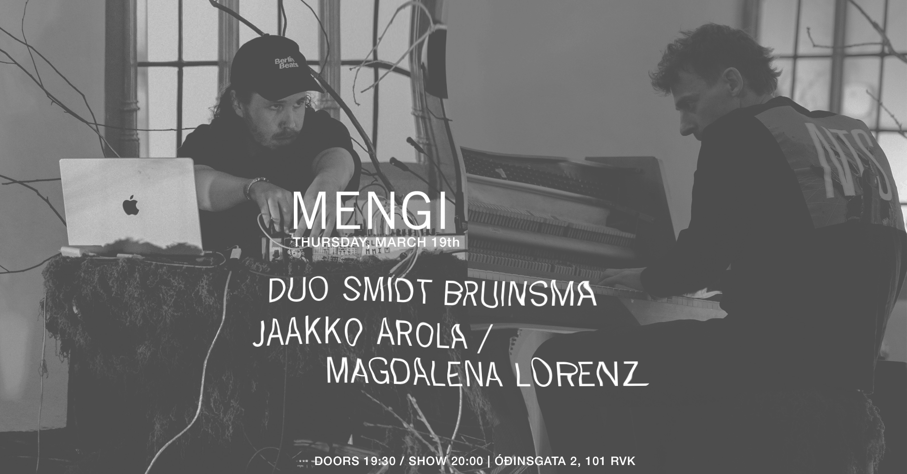THU 19.03 Duo Smidt Bruinsma / Jaakko Arola & Magdalena Lorenz
Tickets Thursday, March 19th DUO SMIDT BRUINSMA / JAAKKO AROLA & MAGDALENA LORENZ doors 19:30 / show 20:00 2500kr / 2000kr students / pay what u can Smidt and Bruinsma’s improvisations are made with a pallette of sounds from the world of piano music and electronic music. Lennart’s animated piano performances are as impressive as they are emotional, ranging from intimate, delicate melodies to wild, scattering rhythms. This, combined with the sonic twisting of Bart Bruinsma- drawing the piano’s sound in-and-out of the digital domain in real-time, makes for a idiosyncratic style of improvisation between the two long-time friends. The project initially formed for a spontaneous show at the opening a visual art gallery, where the duo launched an audio installation by Bart by introducing it with a live concert. Pleasantly surprised by the outcome of the performance, the duo decided to continue exploring this unique soundworld together. Lennart Smidt is a pianist and composer from Berlin. As a place where creativity meets groove and spirit, where improv meets composition, Lennart sees jazz as an acoustic playground. He released his first ensemble EP “Take.Off” in 2016, following with his piano solo album “Boomerang” in 2025. Bart Bruinsma is a composer, performer and sound-designer from the Netherlands. He creates theatre soundtracks, audio-visual installations and live music shows, solo as BARTONDISPLAY and in collaboration with fellow artists collectives. He released his solo EP “NONTENT” with Reykjavik collective Post-Dreifing, and is now in the process of releasing a co-composed album of amalgamated voice and intricate electronics in collaboration with Ragnheiður Erla Björnsdóttir. ------ Jaakko Arola: bass clarinet Magdalena Lorenz: violin
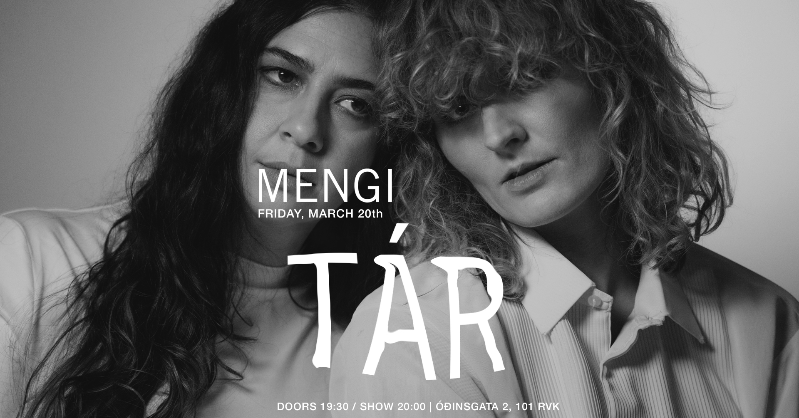FRI 20.03 TÁR
Tickets Friday, March 20th TÁR doors 19:30 / show 20:00 2500kr / 2000kr students / pay what u can Tónlistarkonurnar ZÖE og Elín Ey skipa Alt/Folk dúóið TÁR sem kemur fram í MENGI föstudaginn 20.Mars næstkomandi, þær munu prufa sig áfram með nýtt óútgefið efni og spila meðal annars lagið Paradise, sem kemur út 10.Apríl, í fyrsta sinn opinberlega. Elín Ey þarf vart að kynna en hún hefur verið mikilvægur þáttur í íslensku tónlistarlífi í áraraðir sem lagahöfundur, framleiðandi og flytjandi. ZÖE er upprunalega frá Los Angeles, þar sem hún lærði hljóðverkfræði og framleiðslu. Hún hefur búið og starfað sem tónlistarkona hér á landi, unnið með mörgum af helstu tónlistarmönnum landsins og kennt næstu kynslóð af ungum tónlistarkonum hljóðverkfræði og framleiðslu. Báðar eru þær afrekslistamenn á sinn eigin hátt en saman skapa þær tæra töfra. Þær skilja máttinn sem hrár heiðarleiki í textum skilur eftir sig og eru óhræddar við að prufa sig áfram með hljóð. Þessar hæfuleikaríku listakonur koma hér saman og deila ástríðu sinni fyrir því að segja raunverulegar sögur í gegnum tónlist sem áhorfendur geta tengt við eigið líf. Með þeim spila Eyþór Gunnarsson á hljómborð og Kiddi Kiddi Snær á trommur. ENGLISH: Musicians ZÖE and Elín Ey form the Alt/Folk duo TÁR, which will perform at MENGI on Friday, March 20th. They will be experimenting with new unreleased material and will play, among other things, the song Paradise, which will be released on April 10th, for the first time in public. Elín Ey needs little introduction, but she has been an important part of the Icelandic music scene for years as a songwriter, producer and performer. ZÖE is originally from Los Angeles, where she studied sound engineering and production. She has lived and worked as a musician in Iceland, worked with many of the country's leading musicians and taught the next generation of young female musicians sound engineering and production. Both are accomplished artists in their own way, but together they create pure magic. They understand the power that raw honesty in lyrics leaves behind and are not afraid to experiment with sound. These talented artists come together here and share their passion for telling real stories through music that audiences can relate to their own lives. They are joined by Eyþór Gunnarsson on keyboards and Kiddi Kiddi Snær on drums.
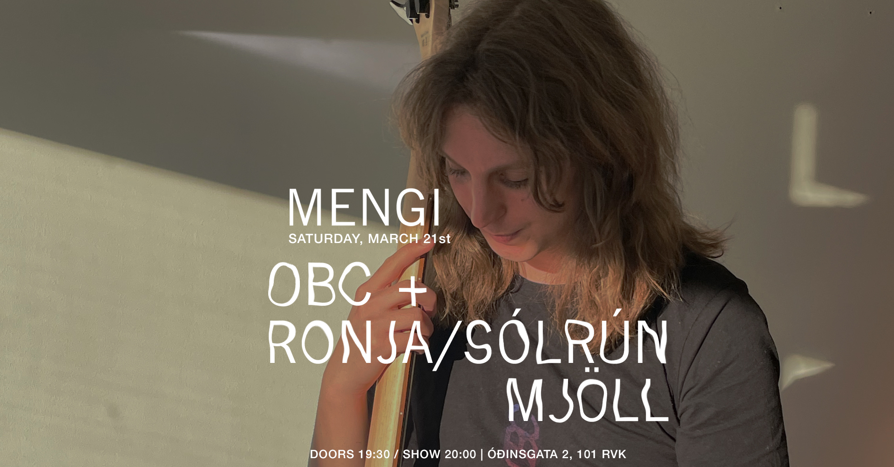SAT 21.03 OBC + Ronja/Sólrún Mjöll
Tickets Saturday, March 21st OBC + Ronja / Sólrún Mjöll doors 19:30 / show 20:00 2500kr / 2000kr students / pay what u can Continuing her DIY explorations of instrument-building and feedback as a core component of sound production, OBC is wielding a homemade feedback bass based on the Halldorophone. This electro-acoustic instrument, being played with frequency-beating, oscillates between tonal noise and rhythms turning into an analog-acoustic drum machine. From there, a relation develops between the instrument and the player leading to an improvisation that keeps evolving between resonant drone, textures and pure roaring noise. OBC is a French sound artist and performer based in Reykjavik, Iceland. She studies feedback phenomena and their relations to ghosts under the direction of Nicola Privato while conceiving her own instrumental devices. She explores free improvisation with her DIY feedback instrument(s) : semi-critical systems creating tipping points between rhythms and sounds. Active as an artist, a sound engineer and an organiser within Geneva and Reykjavik’s DIY/DIT underground scenes, she creates a rich sonic landscape that is built from the diversity of her inspirations and her musical approaches : sometimes drony, sometimes noisy but always punk. + ronja on computer + sólrún mjöll on drums
SAT 21.03 OBC + Ronja/Sólrún Mjöll
Tickets Saturday, March 21st OBC + Ronja / Sólrún Mjöll doors 19:30 / show 20:00 2500kr / 2000kr students / pay what u can Continuing her DIY explorations of instrument-building and feedback as a core component of sound production, OBC is wielding a homemade feedback bass based on the Halldorophone. This electro-acoustic instrument, being played with frequency-beating, oscillates between tonal noise and rhythms turning into an analog-acoustic drum machine. From there, a relation develops between the instrument and the player leading to an improvisation that keeps evolving between resonant drone, textures and pure roaring noise. OBC is a French sound artist and performer based in Reykjavik, Iceland. She studies feedback phenomena and their relations to ghosts under the direction of Nicola Privato while conceiving her own instrumental devices. She explores free improvisation with her DIY feedback instrument(s) : semi-critical systems creating tipping points between rhythms and sounds. Active as an artist, a sound engineer and an organiser within Geneva and Reykjavik’s DIY/DIT underground scenes, she creates a rich sonic landscape that is built from the diversity of her inspirations and her musical approaches : sometimes drony, sometimes noisy but always punk. + ronja on computer + sólrún mjöll on drums
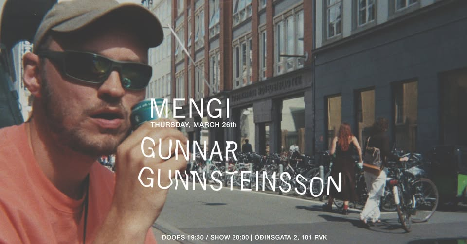THU 26.03 Gunnar Gunnsteinsson
Tickets Thursday, March 26th GUNNAR GUNNSTEINSSON doors 19:30 / show 20:00 2500kr / 2000kr students / pay what u can Tónleikar með Gunnari Gunnsteinssyni í Mengi, 26. mars. Nýtt og gamalt efni í bland, rangalar, textar, gatnamót, spariskór, gregórískur tech schlager, vetrarfrí á Tenerife, kirkjubjöllur, miðaldadraumar, DJ janitor og músíkkosmológía. / A mixture of new and old materials, labyrinths, texts, intersections, shiny leather shoes, gregorian tech schlager, winter vacation in Tenerife, church bells, medieval dreams, DJ janitor and musicosmology. https://gunnargunnsteinsson.bandcamp.com/
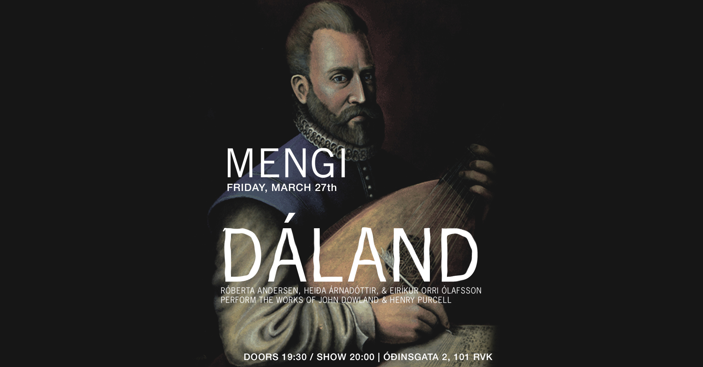FRI 27.03 Dáland
Tickets Friday, March 27th DÁLAND: Róberta Andersen, Heiða Árnadóttir, & Eiríkur Orri Ólafsson perform the works of John Dowland & Henry Purcell doors 19:30 / show 20:00 2500kr / 2000kr students / pay what u can John Dowland (1563–1626) and Henry Purcell (1659–1695) were influential English composers who were masters of composing complex, beautiful and emotional melodies. Singer Heiða Árnadóttir, trumpeter Eiríkur Orri Ólafsson, and electric guitarist Róberta Andersen plan to weave these melodies into a new soundscape, combining the old and the new in a beautiful musical journey. They will reimagine these classic works in a way that evokes new and unexpected experiences. John Dowland (1563–1626) and Henry Purcell (1659–1695) were influential English composers, renowned for their ability to write music of great beauty, emotional depth, and complexity. In this project, singer Heiða Árnadóttir, trumpeter Eiríkur Orri Ólafsson, and electric guitarist Róberta Andersen weave these timeless melodies into a new soundscape, blending the old with the new. Together, they reimagine these classic works, transforming them into a musical journey that opens the door to fresh and unexpected experiences.